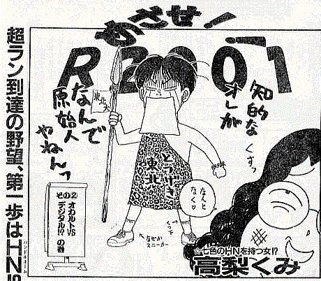
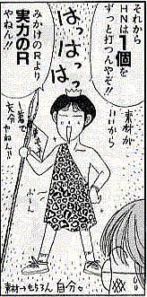
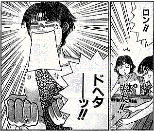

毒と笑いととつげき東北
〜〜過去の日記〜〜
４）00/12/30〜01/02/05分
３）00/12/22〜00/12/29分
２）00/12/14〜00/12/21分
１）00/11/24〜00/12/13分
あ〜ネタなくなってきた(笑)
01/03/01
精神活動
なぜ大衆はあんなにも感動好きなのか、友達好きなのかという問題について、しばらく考えていたが、結局は次の結論に行き着くだろう。
即ち、精神活動の幅が著しく狭く、従って精神活動におけるそのような行動の占める割合が高いのだ、と。
物事を分析し新しい知を得るという精神活動。目標を達成し達成感に浸るという精神活動。
これらがないとすれば、精神活動のほとんどは「感動すること」や「友達と騒いで楽しむ」ことで終わってしまうだろう。
または「悩んでいる自分に酔うこと」など、いずれにしてもおれが今までバカにしてきたような行為にのみ、彼らの精神は向かうことだろう。
東風で最強水準の相手と戦い、安定Ｒの目標を達成し、さらに強くなろうとする。
麻雀のシステムを分析したりデータを取って、知的好奇心を満足する。
そういった活動ができないとすれば、いきおい「レートなんて気にしない、チャットで友達と楽しむ」とか、掲示板でクソみたいな友情ごっこに明け暮れるとか、ムダに問題を起こして人間関係で悩むポーズを取るくらいしかやることがなくなる。
わかるかな？
彼らがなぜあんなにも「感動」で塗り固められているのか。
彼らがなぜあんなにも「友達」を大事にするのか。
全くのところ、それは「知性の欠如」に由来するのである。
01/02/28
「現実的な解決」とは 「相手が悪い」ことを主張するな。「悪い相手」にダメージを与えろ。
他人を「評価」することにどの程度の意味があるのかを考えてみたまえ。
何事かの問題が発生した時にしばしばあるのは、大衆がそれについて熱心に（そして蒙昧に）語り、「評価」を与えることである。
例えば高級官僚がノーパンしゃぶしゃぶに行ったら「官僚は堕落した」だのと「評価」する。
あるいは東風荘で、多重でＲを上げる人を見れば「そんなことをする人間はしょせん〜〜」と「評価」する。
またあるいは──とつが毒を吐くと、「とつは人間性が低い」だのと「評価」する。
言わせてもらうが、だから何なんだ？
そういった「評価」によって、相手を「悪い」と決定して、それで何事かが解決したりするのか？ いや、しない。
単に、「相手が悪い、相手が低い」と決めて、自分を相対的に高め、自己満足に浸っているだけだ。
この形式こそが「ルサンチマン」ではなかったか。
現実的な問題の解決や解消ができずに、「評価（価値）」を転換することによって精神的に（のみ）救われるというだささ。
官僚が嫌いなら、官僚以上の力を持つとか、せめて官僚をたたき落とすくらいのことをしてみろ。
多重がイヤなら、何とかそれを食い止めてみろ。
おれの毒がイヤならおれを論破しろ。
または少なくとも──自分の「評価」を、「世論」にまで仕立て上げて攻撃してみればどうだ？
身近に最もよくあるケースは、団体内部などで誰かと誰かが険悪になり、必死でお互いがお互いの「悪さ」を指摘しあうというくだらない状況だ。
「相手が悪い」と決まったとして、それが何だ？
悪くても自分が得すればいいんだよ。卑小な一個人に「悪い」と思われても、それ以上に味方がいれば全然平気なんだよ。おれが毒を吐いて敵が増えても、より多くの、より優秀な──あるいはより愛しい──味方がいてくれれば充分なんだよ。
良い・悪い、などというのは最もどうでもいい問題なのだ。
周りの人から「悪い」と思われれば、普通の人なら色々なデメリットがあるだろう。
いちいち人の「評価」を気にして、必死で嫌われまい嫌われまいとしている小さな人間だからな。
だがおれのような人間は違う。「悪い」と思われれば思われるほど、カウンタは増えるし注目度が上がる。
どっかのバカが「とつは悪い」と思ったところで、そいつには何もできやしない。
おれに精神的ダメージを与えることも、麻雀に対するおれの取り組みを超えることも、おれの「悪さ」を世論にしておれがネットにいられない状況を作ることも、おれの賛同者を減らすことも・・・彼がおれに対して望む全ての現実的な攻撃は失敗に終わり、彼の小さな精神的満足だけが達成されるだろう。結局のところ、単におれのＨＰのカウンタを増やすだけなのだ。
「相手が悪い」という評価を適当に正当化することは、誰にでもできることだ。
その先のことができなければ、何の意味もない。
その評価を他人にうまく飲ませて、相手の周りを敵だらけにして孤立させるとかね。
そうすれば「攻撃」は成功だ。
まずは現実的な目標を立て、明確にそれを把握せよ。「相手が嫌いだ」という曖昧なものではダメだ。
「相手に失敗させ、精神的ダメージを与えたい」くらいまで具体的にだ。
そしてそのためにはどうすれば目標が達成されるのか、しっかり考えなさい。
おれはこないだ、ある人間を（データから）「多重だ」と断定した（言い替えればそいつを「悪い」と判断した）。
その人間は「確証なしで他人を中傷するとつ」を「悪い」と言ってきた。
結局どうなったかと言うと、その人は不敗伝説さんのレートランキングや超ラン番付から姿を消した(ただし2/28現在、「一時的に削除」という断り書きがある)。
東風荘ＢＢＳでそいつの「悪行（わざと試合を遅延させるなど）」が糾弾されてた。
掲示板のカキコを真に受けるのは考え物だが、おれのデータも合わせて考えると、恐らくはおれの主張が正しかった。
相手を「悪い」と判断したのはお互い様だが、おれの「悪い」の判断が一般化したのだ。
01/02/27
吉野屋におけるカオス
吉牛。それはオレの食生活の大部分を占めるすばらしい店である。
「並たまごみそしる」──吉野屋に入ってこの言葉を吐くだけで、自分の手料理や母の手料理などとは比較にならないおいしさの食料が目の前に登場する。まさに科学技術である。
しかし、である。
私は吉野屋に、一つだけ不満を述べたい。次の表を見比べて欲しい。
特朝定食（Ｔと表記しよう） 490円
・ごはん
・みそしる
・鮭
・たまご
・納豆
牛鮭定食（Ｇ） 490円
・ごはん
・みそしる
・鮭
・牛皿（牛肉）
さて、これらは吉野屋の定食であるが、ちなみに単品でも注文することができ、例えば
・納豆とたまご（Ａ） 120円
・牛皿（Ｂ） 300円
である。
さて我々はここで、（Ｇ−Ｂ＋Ａ）を考えるべきである。
つまり、牛鮭定食から牛皿をなくし、納豆とたまごを加える。
こうすると内容は
（Ｇ−Ｂ＋Ａ）
・ごはん
・みそしる
・鮭
・たまご
・納豆
となり、特朝定食（Ｔ）と一致する。
即ち、その内容において（Ｇ−Ｂ＋Ａ）＝Ｔ なのである。
しかし、その値段において（Ｇ−Ｂ＋Ａ）を考えると、これが310円となり、（Ｇ−Ｂ＋Ａ）＝Ｔ−180となるのだ！ おえおえさっきの計算と矛盾したよ（Ｘであり、かつＸでない時、論理学的にこれは矛盾である）。
同じ内容なのに、頼み方によって、なんと180円分も損することがあるとは！
恐るべき非線形性、まさにカオスである。
ていうか、値段の決め方適当すぎかおまえ( ≧∇≦)ﾌﾞﾊﾊﾊ!
結論：特朝定食は、朝にしか頼めないメニューのくせに超損である。
吉野屋で「特朝定食」など頼んでいるうちは、人生の敗者である。
もちろん、毎日のように吉牛に行っている私は、別の意味で人生の敗者であろう(ﾉToT)ﾉ
┫:･'.::･┻┻:･'.::･
01/02/25
おれは外食が多い。
こないだの日記におかんの料理下手について書いたが、料理の才能という点で言えばおれも似たようなものだから。
これでも一人暮らしを始めたばっかりの頃は、料理の本などを買って自分で料理してみようと思っていたものだ。
しかしまず、料理の用語がわからんのよね(笑)。
「蒸す」「煮る」「焼く」「炒める」これらの用語を見てもピンとこない。
「ん？ これを・・・煮る？ ようわからんな 取りあえず火にかけとくか」
「あっ しまった日本酒がないぞ・・・ん〜、同じアルコールやしここはひとつ、ワインで。」
こうしてできあがった料理はクソまずいの一言。食えたものではない。
だいたい「調味料のさしすせそ」さえ知らない。
「さ・・・砂糖かな。し・・・塩。す・・・お酢やよな？ せ・・・？ せ・・・セメント？」どんな料理やねん。
しかも自分で料理すると食器を洗ったりするのもめんどくさい。
そのうち包丁とかもほとんど使わなくなり、ふと気付いたら錆びていた。
しばらくの間はハサミでネギや肉をチョキチョキ切って調理していたが、何か自分のやっていることのむなしさに気付き、おれは一流シェフへの道を断念したのであった。
01/02/18
誤謬は虚勢から始まる 東風荘で勝つということ、麻雀に強いということ
「東風ではＲにこだわっていないが、実戦では強い」ような人について。
実戦で、収支や平均順位などのデータをちゃんとメモして残しているだろうか？
そして充分に信頼できる数の試合結果をもとにして、「実戦では強い」と判断しているだろうか？
東風なら時間や場所を拘束されないので、けっこう「死ぬほど打つ」ことができ、データが取れる。
しかし実戦で、信頼できる数の試合をこなしてデータも取っている人って、あんまりいないだろう。
だから「東風ではＲがあがらないけど、それとは別の強さがある」というのは、ほとんど勘違いだろう。
即ち、実戦での少ない結果がたまたま「ついていた」。そしてそれを「実力」だと錯覚して、それに対して東風でのＲが満足のいかないものになったから「実戦では〜〜」と言わざるを得なくなるのだ。
これはちょうど「新キャラ」を作りまくる人の発想と似ている。
新キャラを作ると、通常、「実力」より100程度高いＲの値になることができる。
そこでその値を「実力」だと錯覚し、その後の適正なＲ値を「不調」と考え、また新キャラに行くわけだ。
自分にとって都合の良い部分の結果を「実力」と見なし、残りは「不調」と考える・・・麻雀のように偶然性の強いゲームでは、虚勢家がよくやりそうなことである。
「東風と実戦は違う」のはその通りだが、ちゃんとデータを取って比較すべきだ。
東風でＲ2000でも、実戦に慣れていなければ負けるとか言うが、ちゃんと信頼できる程度の試合数（例えば800試合）を打つ間には、嫌でも慣れるでしょう。
だから比較できるようなデータ数になる頃には「慣れ」がうんぬんというのはほとんど無視できるわけ。
確かにフリー雀荘のように、「トップを取ることが重要」な場所では打ち方は自ずと変わるに決まっている。
しかし、東風の最上卓で勝つということが、フリーでは負けることの根拠には決してならない。
他の条件が同じであったら、明らかに東風での勝ち組の方が東風での負け組より強いだろうし、「慣れ」という要因については上に示したとおり無視できる。
結局のところ、「東風と実戦」の、実力の差について語ることは無意味である。
（ああ、ちなみにおれは実戦も高校のころから打ってるよん）
キャラを１つに絞って試合数をこなし、安定Ｒを出して自分の実力を正確に把握することにつとめましょう。
ランダムな相手としっかり打ち、自分の実力がどこにあるかをちゃんとわかろう。
何個もキャラを作ってみかけＲだけ上げたり、Ｒが高くなったら保存して別キャラに行ったり、自分の実力を偽ってどうするねん。
そんな人らに、麻雀の強さについてうんぬんする資格はない。少なくとも（おれの発言と違って）信頼できない。
どうせあんたはロジックよりちっぽけなプライドを優先するんだろ？
「東風と実戦の強さがいかに違うか」を、上に書いたような合理的主張を無視して語ってしまうタイプだろう。
麻雀の強さについて語りたければ、（まあおれのようにＲの分布を調べたりまでする必要はないにしても）少なくともラン卓で打ちまくって、データを出すくらいの客観性を求める姿勢が必要だ。
最後に、「Ｒにこだわらずチャットなどを楽しみたい」ということについて。
それはそれで良いだろうが、チャット用のキャラとマジウチ用のキャラを分けてみればどうだろうか？
自分の限界にチャレンジする（Ｒを上げる）楽しみと、チャットをする楽しみ、両方が得られるよ？ なんでそれをしないの？
目標を持たずにダラダラ打つことだけで満足できる向上心の欠如には吐き気がする。
あるいは、「本気」で打って「負け」ることを恐れ、「Ｒにこだわると楽しくない」などとルサンチる無能さに、だ。
ちなみに言っておくが、最上卓の常連になると、また強ければ強いほど、東風では友達ができやすいと思う。
つまりチャットをするためにも、Ｒを上げることは有用なはずなのだが。
おれの場合ＨＰが多少知られているという側面もあるにせよ、とてもたくさんの人から声を掛けられるし、「ファンです」なんてのも非常に多い。
ほらさ、Ｒ上げることにはすごくメリットがあるよ・・・。
「Ｒにこだわらず楽しく」は無能の発露である。
「Ｒにこだわってより楽しく」できる能力が要求されるのだ。
誤謬は虚勢から始まる。
01/02/15
本日発売の「近代麻雀」・高梨くみ先生のマンガに登場しました(笑)


コメントは･･･「似とる！！」(爆)
いやまじでこんな感じで部屋で一人で叫んでるかも(危)
･･･ん？ 著作権？ え〜と･･･ゞ(´▽｀；) 文句きたら消します(笑)
01/02/13
ああ答えを教えてやるとも。
ワイ卓麻雀には何の価値もない。
そしてラン卓より上ランに、上ランより最上に価値がある。
おれがそう言ってるんやから間違いないって( ´ｰ`)y-ﾟﾟ
ん？ 根拠を示せ？ それは君の価値観だって？ 笑わせるな(
≧∇≦)ﾌﾞﾊﾊﾊ!
「根拠」などという上等なものは、これに反論する程度の水準の連中には似合わない。
「価値観」がどうのと語る前に相対主義思想くらい理解していてね。
ええか、反論するなよ？ ムダだ。
これに反論してきたヤツはおれが徹底的に叩くからよろしく(笑)。
おれの叩きはその問題についてだけでなく、相手の知性障害や人格障害も含めて全てを攻撃するからね。注意ね。
01/02/12
くもん式は人間の心を貧しくする(笑)
「くもん式」をご存じだろうか？ 小学生〜高校生程度の算数・数学の学習用の塾みたいなものである。
とつは小さい頃からこれをやっていた。
ところが、このくもんというのが同じような計算問題が死ぬほどあって、なかなかつらいのである。
プリントに問題が書いてあって、それを１日10枚とかやるのだが、はっきり言って苦痛。
（もちろん、数学の力は非常につくよ。それは間違いないが、おれは面倒くさがりなので 笑）
そこで私はどうしたか？
くもんの教室の別の部屋に、答えの冊子が隠されていたのだが、おれは深夜にそこに忍び込んでそれをゲット、それを写していた(爆) 小学校１年生のやることちゃうやろ(爆)
また種々の「つらさ軽減技術」があり、例えばプリントが10枚あったら、７枚目あたりを飛ばすとか、５枚目の裏を「忘れたフリしてやらない」など色々あった(笑)。
しかし宿題はたまっていく。
やらないと、１日10枚たまるのである。
で、おれはほとんど宿題をやらずにいた。
たまるたまる。
学習机の右下のでかい引き出しには、無限とも思える量の未回答のプリントがたまっていった。
ある時ふと、それが何枚たまったか知りたくなって数えたら5883枚にも達していた(爆)
お前ちょっとは勉強せいや(
≧∇≦)ﾌﾞﾊﾊﾊ!
ん？ そのプリントどうしたかって？
裏山で燃やした。いや、盛大に燃えましたよあれ(
´ｰ`)y-ﾟﾟ
だってどうしようもないねんもん( ≧∇≦)ﾌﾞﾊﾊﾊ!
あと、くもんの塾の先生がイマイチおかしかった。
塾で勉強していて、ヤブ蚊にかまれたことがあった。めっちゃかゆくなったので、「かゆい〜〜」と言っていたら、先生が気を利かせてキンチョールを持ってきたのである。
しかし・・・その先生、蚊にかまれたおれの腕にキンチョールを放出しとるで！
殺す気か！！(爆)
それから、生徒の家に年賀状出すのはええが、なんでうちに４通も来てるねん(爆)
ちゃんとどこ出したか把握しろや( ≧∇≦)ﾌﾞﾊﾊﾊ! 適当すぎ！
01/02/09
そして私は狂人ではなくて──とつげき東北ＦＡＢ（Frequent
Answered Booing）
Ｑ
君は思い上がっている
Ａ
いやいや、それは単に君が「謙虚さが重要」「傲慢は良くない」などの古くさい常識にしばられているだけだ。
君たちは何の根拠もなくおれを批判する。おれは全てに理屈を出している。傲慢なのは君だよ。
Ｑ
君は思いやりがない
Ａ
いやいや、黒とつや日記をちゃんと読んだか？ 思いやりがないのは君の方だし、そもそもそれは必要ない。
Ｑ
君は冷酷だ
Ａ
いやいや、バカでないだけだ。
Ｑ
そんなに敵を増やしてどうする？
Ａ
敵が増えるから面白いんだ。何の変哲もないただのＨＰより10倍も面白いだろう。
敵の数ではそこらの人に負けないが、味方の数も同様にだ。要するに存在感があるかどうかということだ。
Ｑ
そのうちみんなから見放されるな(ﾜﾗ
Ａ
妄想ごくろうさん。不思議なことだがおれがどんなに毒を吐いてもおれの周りには常に賛同者がいるし、人が寄ってくる。
なぜだかわかるか？ 君のように凡庸でないからだ。「おもしろい」からだ。
なぜこの「黒い快楽」がわからない！？ どうしてこれが笑えない！？
ちょっとギャグセンスなさすぎ、あるいは道徳にしばられすぎ。
相対主義から勉強して出直してきてください(笑)
01/02/07
「浮いた行為」について──感動オナニー好きの全ての蒙昧諸君へ
ある行為が、その内容の合理性や問題解決性をないがしろにし、主として感動的な自己満足のためにのみなされる時、これを「浮いた」行為と呼ぼう。地に足がついていない、という意味である。
例えばまあ、「ネットの知り合いと仲が悪くなった時」に、関係を元に戻そうとして謝ったりするのは「浮いて」いない行為だが、「ネット引退します」などと言い出すのは「浮いた」行為である（数日前の日記参照）。
当初の目的「関係を元に戻したい」を無視し、また「本当はネットを続けたい」という目的も踏みにじってまで、「ネット引退します」と発言する。単にそのような行為をすることそのものが何かしら感動的で、パフォーマティヴで、そして結局のところ、短絡的な精神的満足（主としてある種道徳的な感動を伴う）以外に何の役にもたたないのである。
「浮いた発言」など世の中のどこにでも転がっている。
「自分たちだけの力で頑張ろう！」← 他人の協力を得て問題解決するより、「頑張っている自分」に道徳的に感動したい
「自殺は許されるか･･･難しい問題ですね」← 「法的に問題ない」というあたりまえの結論より「考えている自分」が好き
「人間なんてしょせんちっぽけ」← 何と比較したの？ 単にその発言が感動的に受け容れられるから言っただけ。
「信じているからね」← 信じるなんてただ無能で危険なだけだが、「信じる」という行為の道徳的感動性を極限まで追求。
（冷酷な人間に）「かわいそうな人ね」← そんな感情は生じ得ない。単にこの言葉が感動的だから言いたい。
「いじめ、かっこわるい」← いや。いじめられる方が明らかにかっこわるい。語ることが気持ちいいのね・・・。
まだまだまだまだまだまだいくらでもある。むしろ大衆のマジメな発言の９０％くらいは浮いている。
発言に限らず、「浮いた行動」もあり、例えば
「絶対その場所に彼女は現れないのに、ムダに雨の中待っている」← 問題解決ではない。「そんな自分が好き」
「ボランティアに目覚めた」← 損。哀れにも、ただただ道徳と感動への深い信心、即ち蒙昧さを露呈しているばかりだ。
などのようなものがある。
「浮き」という概念はおれ発明だが、おれの所属するサークルの「現代思想わかってる連中」の中では共通言語になっている。
この概念は「ルサンチマン」の概念と同様、大衆（要するに「世の中の大部分の何かしら現実を離れた人間たち」だ）の行動分析の際に、非常に便利な概念である。
例えばヤフー掲示板の「哲学・思想」をのぞいてみる。どれどれどんなトピがあるかな・・・。
「２１世紀、黄金の翼に乗ってはばたくために」どんなトピやねん(爆)。
ちょい君たち、感動求めすぎ(爆)。
だいたい翼に乗った上、さらにはばたくわけ？ かっこわるいそれ(笑) 飛びすぎ(笑)
イメージのみやないか。感動のみやないか。内容は「心」だの「幸福」だの、クソやかましい。どれ一つ現実的な幸福に向かっていないし、正しくもない。結局のところ、クソみたいな発言を垂れ流して「感動する」ことが目的なのである。
黄金の翼に乗って浮いてるよ君たち。浮き、かっこわるい。
さて翻って、あらゆるWEB上のクズＨＰでの「友情ごっこ」に目を向けてみよう。
我々は今「浮き」の概念を知った。
もしこのような行為の形式に君が今まで気付いていなかったとしたら、これはとつからもらった知性と思え(爆)。
大衆のいかにほとんど全ての行為が「ルサンチマン」と「浮き」で説明できるかに、改めて驚くことであろう。
とつの言っている概念を明確につかみ取れば、他人の全ての発言・全ての行為が、今までと全く異なった形式で、君の目に映るであろう。世界が変わるであろう（ヒマがあれば黒とつ、及びとつ日記をもう一度読み直すことをお勧めする）。